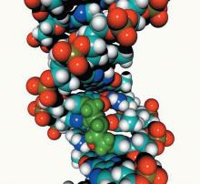
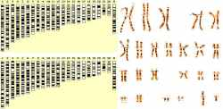
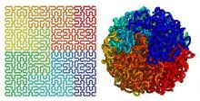

- 中文名
- 人类基因组
- 外文名
- Human Genome
- 所 指
- 人的基因组
- 别 称
- 人类基因体
- 相关研究
- 人类基因组计划
人类基因组基本信息
编辑现代遗传学家认为，基因是DNA（脱氧核糖核酸）分子上具有遗传效应的特定核苷酸序列的总称，是具有遗传效应的DNA分子片段。基因位于染色体上，并在染色体上呈线性排列。基因不仅可以通过复制把遗传信息传递给下一代，还可以使遗传信息得到表达。不同人种之间头发、肤色、眼睛、鼻子等不同，是基因差异所致。
人类只有一个基因组，大约有2-3万个基因。人类基因组计划是美国科学家于1985年率先提出的，旨在人类基因组阐明30亿个碱基对的序列，发现所有人类基因并搞清其在染色体上的位置，破译人类全部遗传信息，使人类第一次在分子水平上全面地认识自我。计划于1990年正式启动，这一价值30亿美元的计的目标是，为30亿个碱基对构成的人类基因组精确测序，从而最终弄清楚每种基因制造的蛋白质及其作用。打个比方，这一过程就好像以步行的方式画出从北京到上海的路线图，并标明沿途的每一座山峰与山谷。虽然很慢，但非常精确。
随着人类基因组逐渐被破译，一张生命之图将被绘就，人们的生活也将发巨大变化。基因药物已经走进人们的生活，利用基因治疗更多的疾病不再是一个奢望。因为随着我们对人类 本身的了解迈上新的台阶，很多疾病的病因将被揭开，药物就会设计得更好些，治疗方案就能“对因下药”，生活起居、饮食习惯有可能根据基因情况进行调整，人类的整体健康状 况将会提高，二十一世纪的医学基础将由此奠定。
利用基因，人们可以改良果蔬品种，提高农作物的品质，更多的转基因植物和动物、食品将问世，人类可能在新世纪里培育出超级物作。通过控制人体的生化特性，人类将能够恢复或修复人体细胞和器官的功能，甚至改变人类的进化过程。
人类基因组计划的目的
测出人类基因组DNA的30亿个碱基对的序列，发现所有的人类基因，找出它们在染色体上的位置，破译人类全部遗传信息。
人类基因组组成
编辑人类基因组染色体
人类基因组是由23对染色体（共46个）所构成，每一个染色体皆含有数百个基因，在基因与基因之间，会有一段可能含有调控序列和非编码DNA的基因间区段。人类拥有24种不同的染色体，其中有22个属于体染色体，另外还有两个能够决定性别的性染色体，分别是X染色体与Y染色体。1号到22号染色体编号顺序，大致符合他们由大到小的尺寸排列。最大的染色体约含有2亿5千万个碱基对，最小的则约有3800万个碱基对。这些染色体通常以细丝状存于细胞核内，若将单一细胞内的染色体拉成直线，那麼将大约有6英尺长（1英尺=30.48公分）。
[1]
在人类个体的体细胞中，通常含有来自亲代的1到22对体染色体，再加上来自母亲的X染色体，以及来自父亲的X或Y染色体，总共是46个（23对）染色体。科学家将这些染色体分为7组：1号到3

构建人类基因组草图
号是A组；4号与5号是B组；X染色体以及6号到12号是C组；13号到15号是D组；16号到18号是E组；19号与20号是F组；21号、22号与Y染色体是G组[4]。对于一般人类来说，每个细胞核内只有两套染色体。人类基因组基因
人类与其他物种的基因组比较（大约）
| 学名 | 中文名 | 碱基对数量 | 基因数量 |
Mycoplasma genitalium
| 霉浆菌（生殖器支原体） | 580,000 | 500 |
| Streptococcus pneumoniae | 肺炎双球菌 | 2,200,000 | 2,300 |
| Haemophilus influenzae | 流感嗜血杆菌 | 4,600,000 | 1,700 |
| Escherichia coli | 大肠杆菌 | 4,600,000 | 4,400 |
| Saccharomyces cerevisiae | 酿酒酵母 | 12,000,000 | 5,538 |
| Caenorhabditis elegans | 秀丽隐杆线虫 | 97,000,000 | 18,250 |
| Arabidopsis thaliana | 阿拉伯芥（拟南芥） | 125,000,000 | 25,500 |
| Drosophila melanogaster | 黑腹果蝇 | 180,000,000 | 13,350 |
| Oryza sativa | 亚洲稻 | 466,000,000 | 45,000-55,000 |
| Mus musculus | 家鼠 | 2,500,000,000 | 29,000 |
| Homo sapiens | 人类 | 2,900,000,000 | 27000 |
人体内估计约有20000到25000个蛋白质编码基因。原本这个估计的数目超过100000，在更好的基因组序列品质与基因识别技术出现之後，才逐渐向下修正为现在的数字。虽然人类的基因数量比起某些较为原始的生物更少，但是在人类细胞中使用了大量的选择性剪接（alternative splicing，又译“可变剪切”，将转录产物中穿插在内含子中的外显子以选择性的方式进行剪切及保留，形成不同的RNA剪切产物），这使得一个基因能够制造出多种不同的蛋白质，且人类的蛋白质组规模也较前述的两个物种更庞大。也就是说，长期的进化，使得基因的编码效率更高了。
大多数人类基因拥有许多的外显子，且人类的内含子比位在其两端的外显子更长。这些基因参差不齐地分布在染色体中，每一个染色体皆含有一些基因较多的区段与基因较少的区段。这些区段的差异，则与染色体带（chromosome bands）及GC含量相关。基因密度所显现的非随机模式之涵义与重要性尚未明了。
除了蛋白质编码基因之外，人类的基因组还包含了数千个RNA基因（由RNA组成），其中包括用来转录转运RNA（tRNA）、核糖体RNA（rRNA）与信使RNA（mRNA）的基因。其中转录rRNA的基因称为rDNA，分布在许多不同的染色体上。
人类基因组调控序列
人类基因组含有许多不同的调控序列，并以此来控制基因表现。这些序列是典型的短序列，会出现在靠近基因的位置。由于高通量表达（high-throughput expression；指利用电脑与机器辅助以进行大量的序列分析）技术与比较基因组学研究的出现，人们开始系统性地了解这些调控序列，以及它们共同构成的基因调控网络（gene regulatory network）。
人们之所以能够出辨认哪些基因序列是调控序列，是因为生物在演化过程中对基因的保留。以大约7千万年前到9千万年前分支的人类与老鼠为例：若以电脑比较两者的基因序列，并且将两者皆保有的非编码序列辨识出来，就可以知道哪些基因序列可能对于基因调控来说相当重要。
人类所拥有的调控序列所在位置，可以利用河豚的基因定位出来。因为河豚与人类拥有相同的基因，同时也拥有和人类相同的调控序列，但是「垃圾」基因比人类更少。如此较为简洁的DNA序列，使得调控基因的位置较容易定位。
人类基因组其他DNA
蛋白质编码序列（也就是外显子）在人类基因组中少于1.5%。在基因与调控序列之外，仍然有许多功能未知的广大区域。科学家估计这些区域在人类基因组中约占有97%，其中许多是属于重复序列（repeated sequence）、转座子（transposon）与假基因（pseudogene）。除此之外，还有大量序列不属于上述的已知分类。
这些序列大多数可能是演化的产物，现在已经没有作用，也因此有时会被称作是「垃圾DNA」

人类基因组
（junk DNA）[9]。不过有一些迹象显示，这些序列可能会经由某些仍然未知的方式产生作用。最近一些使用微阵列技术所作的实验发现，大量非基因DNA事实上会被转录成为RNA[10]，这显示转录作用背後可能还存在一些未知的机制。此外，不同种类的哺乳动物在演化的过程中共同保留了这些序列，也显示基因组中还有很多作用未知的部分。人类基因组内大量功能未知的序列，是目前科学研究的重点之一。人类基因组变异
大多数对于人类遗传变异的研究集中在单核苷酸多态性（single nucleotide polymorphisms；SNPs），也就是DNA中的个别碱基变换。科学家分析估计，在人类的富含基因的染色质中，平均每100到1000个碱基会出现1个SNPs，不过密度并不均匀。由于SNPs的存在，如「所有人类的基因有99%都是相同的」一的说法并不精确。国际人类基因组单体型图计划（International HapMap Project），便是为了要将人类基因组中的SNP变异作编录，而组成的一个大规模合作计划。
基因组中有一些小型的重复序列，它们所拥有的基因座与基因长度，在不同的人类个体之间有很大的变异性。这也是DNA指纹（DNA fingerprinting）与亲子鉴定（paternity testing）技术得以应用的基础。异染色质（heterochromatin）是人类基因组的一些部分，总共包括有数百万个碱基对，这些碱基对在人类族群之中的变异性也相当大。而且由于异染色质的重复性很高而且长度很长，因此目前的技术仍然无法精确地解出它们的序列。
配子细胞中大多数的基因组突变，可能会造成胚胎不正常发育，而人类的一些疾病也与大尺度的基因组异常有关。例如唐氏症、透纳氏症（Turner Syndrome），以及许多其他疾病，是染色体的不分离（nondisjunction）现象所造成。在癌细胞中的染色体，则是频繁地出现非整倍性（aneuploidy）现象，不过这种现象与癌症之间的关系仍然不明。
2006年一篇发表在《自然》的研究报告中，研究人员发现在人类与其他哺乳类DNA序列中的拷贝数变异（copy number variation；CNV），可能非常重要。拷贝数变异又称为拷贝数多型性（copy number polymorphisms；CNPs），是删除、插入（insertion）、复写（duplication），以及复杂多位置变异（complex multi-site variants）的合称，在所有人类以及其他已测试的哺乳动物中皆可发现。
人类基因组线粒体
大多数的基因是存在细胞核中，但是细胞中一个称为粒线体的胞器，也拥有自己的基因组。粒线体基因组在线粒体疾病（mitochondrial disease）中具有一定的重要性。而且这些基因也可以用来研究人类的演化，举例而言，若分析人类粒线体基因组的变异情况，将能够使科学家描绘出人类的共同祖先，称为「线粒体夏娃」（Mitochondrial Eve）。之所以称为夏娃，是因为粒线体是位于细胞质中，而人类的精子与卵子结合时，源自母亲（女性）的卵子提供了绝大多数的细胞质，因此人类细胞中的粒线体基因皆是来自母亲。
由于粒线体缺乏用来检查复制错误的能力，因此粒线体DNA（mDNA）的变异速率比细胞核DNA（一般所指的DNA）更快。粒线体的突变速率快了20倍，这使mDNA能够用来较为精确地追溯出母系祖先。研究族群中的mDNA，也能使人们得知此族群过去的迁移路径，例如来自西伯利亚的美洲原住民；以及来自东南亚的波里尼西亚人。更有甚者，mDNA研究显示在欧洲人的基因中并无参杂尼安德塔人的DNA。
与每个细胞核皆只有两套染色体组成的核基因组不同，粒线体基因组在每个粒线体当中，皆有大约10个以环状DNA，整个细胞里则约有8000个。每个环DNA上有16569个碱基对，共组成37个基因，其中13个是蛋白质编码，22个是RNA基因。这些基因大多与呼吸作用有关。
人类基因组遗传疾病
编辑当一个或多个基因发生不正常表现时，便可能会使某个相对应的表型产生一些症状。遗传异常的原因包括了基因突变、染色体数目异常，或是三联体扩张重复突变（triplet expansion repeat mutations）。如果受损的基因会从亲代遗传到子代，那就会成为一种遗传性疾病。目前已知有大约4000种遗传疾病，囊肿性纤维化是其中最普遍的疾病之一。科学家通常会以群体遗传学的方法进行遗传疾病的研究，对于疾病的治疗，则是由一些经过临床遗传学训练，且同时也是遗传学家的医生来进行。人类基因组计划的成果，使遗传检测技术能够更有效地检查出一些与基因有关的疾病，并且改进治疗方法。父母能够透过遗传咨询来侦询一些遗传症状的严重性、遗传的机率，以及如何避免或是改善这些症状。
基因剂量（Gene dosage）会对人类的表现型产生庞大的影响，对于染色体中造成疾病的复写、省略与分裂等现象的形成拥有一定的角色。例如唐氏症患者（21号染色体为三体）有较高的比率得到阿兹海默症，可能是因为与阿兹海默症有关的类淀粉前趋蛋白基因（位在21号染色体上）的过度表现所致。而且相对而言，唐氏症患者中则有较低的比率得到乳癌，可能是因为肿瘤抑制基因（tumor-suppressor gene）的过度表现。
人类基因组演化
编辑比较基因组学（Comparative genomics）对于哺乳类基因组的研究显示，人类与大约两亿年前就已经分化的各物种相比，有大约5%的比例在人类基因组中保留了下来，其中包含许多的基因与调控序列。而且人类与大多数已知的脊椎动物间，也享有了一些相同的基因。
黑猩猩的基因组与人类的基因组之间，有98.77%是相似的。而平均每一个属于人类的标准蛋白质编码基因，只与属于黑猩猩的同源基因相差两个氨基酸；并且有将近三分之一的人类基因与黑猩猩的同源基因，能够转译出相同的蛋白质。人类的2号染色体，是人类与黑猩猩基因组之间的主要差异，这一条染色体是由黑猩猩的染色体12号与13号融合而成。
人类在晚近的演化过程中失去了嗅觉受器基因，这解释了为何人类比起其他的哺乳动物来说，拥有较差的嗅觉。演化上的证据显示，人类与某些灵长类所拥有的彩色视觉，降低了这些物种对于嗅觉能力的需求。
人类基因组研究
编辑人类基因组计划
人类基因组计划（human genome project,HGP）是由美国科学家于1985年率先提出，于1990年正式启动的。美国、英国、法兰西共和国、德意志联邦共和国、日本国和中国科学家共同参与了这一价值达30亿美元的人类基因组计划。这一计划旨在为30多亿个碱基对构成的人类基因组精确测序息。与曼哈顿计划和阿波罗计划并称为三大科学计划。
2000年6月26日，参加人类基因组工程项目的美国、英国、法兰西共和国、德意志联邦共和国、日本国和中国的6国科学家共同宣布，人类基因组草图的绘制工作已经完成。最终完成图要求测序所用的克隆能忠实地代表常染色体的基因组结构，序列错误率低于万分之一。95%常染色质区域被测序，每个Gap小于150kb。完成图将于2003年完成，比预计提前2年。
美国和英国科学家2006年5月18日在英国《自然》杂志网络版上发表了人类最后一个染色体——1号染色体的基因测序。在人体全部22对常染色体中，1号染色体包含基因数量最多，达3141个，是平均水平的两倍，共有超过2.23亿个碱基对，破译难度也最大。一个由150名英国和美国科学家组成的团队历时10年，才完成了1号染色体的测序工作。科学家不止一次宣布人类基因组计划完工，但推出的均不是全本，这一次杀青的“生命之书”更为精确，覆盖了人类基因组的99．99%。解读人体基因密码的“生命之书”宣告完成，历时16年的人类基因组计划书写完了最后一个章节。
中国参与
1999年7月7日，中国科学院遗传研究所人类基因组中心注册参与国际人类基因组计划；同年9月，国际协作组接受了申请，并为中国划定了所承担的工作区域——位于人类第3号染色体短臂上。人类基因组计划的核心内容是构建DNA序列图，即分析人类基因组DNA分子的基本成分——碱基的排列顺序，并绘制成序列图。中国所负责区域的测序任务由中国科学院基因组信息学中心、国家人类基因组南方中心、国家人类基因组北方中心共同承担，测定了3.84亿个碱基，所有指标均达到国际人类基因组计划协作组对“完成图”的要求。2003年4月15日，美、英、日、法、德、中6国领导人联名发表《六国政府首脑关于完成人类基因组序列图的联合声明》，宣告人类基因组计划圆满完成。中国高质量完成人类基因组计划中所承担的测序任务，表明中国在基因组学研究领域已达到国际先进水平。
人类基因组专利问题
编辑24条染色体上的专利数目
| ||
|---|---|---|
染色体编号
| 基因数目
| 专利数目
|
1号
| 2769
| 504
|
2号
| 1776
| 330
|
3号
| 1445
| 307
|
4号
| 1023
| 215
|
5号
| 1261
| 254
|
6号
| 1401
| 225
|
7号
| 1410
| 232
|
8号
| 952
| 208
|
9号
| 1086
| 233
|
10号
| 1042
| 170
|
11号
| 1626
| 312
|
12号
| 1347
| 252
|
13号
| 477
| 97
|
14号
| 821
| 155
|
15号
| 915
| 141
|
16号
| 1139
| 192
|
17号
| 1471
| 313
|
18号
| 408
| 74
|
19号
| 1715
| 270
|
20号
| 762
| 178
|
21号
| 357
| 66
|
22号
| 106
| 657
|
X
| 1090
| 200
|
Y
| 144
| 14
|
3号 1445 307 由中国测定，从1999年9月开始，不到一年完成。其中包括与肺癌、卵巢癌、鼻咽癌等有关的基因。
从1981年到1995年间，全世界共有1175件DNA序列的专利许可。早期的申请对象主要是机能已知的基因，後来原属于美国国家卫生研究院的克莱格·凡特，将2716件尚未了解功能的基因，反转录成cDNA型

首张人类基因组立体结构图
式，并且提交专利申请。这些申请受到了当时掌管NIH基因组部门的詹姆士·华生等许多科学家的反对，并且被专利局驳回。目前人们对于基因资讯是否应该登记专利仍有争议。由于学术研究并非营利性，因此通常不受这些专利所拘束。此外由于美国政府近年来将专利申请条件提高，因此与DNA有关的专利许可，在2001年之後已逐渐减少。到2005年4月为止，美国国家生计资讯中心所记载的基因资料中，有82%没有专利标示，另外有14%属于私人机构，3%属于公家单位。
右表显示2006年时每条染色体上的基因数目与专利数目，由于有时候会有多个基因登记成一项专利；或者是一个基因拥有多项专利，因此表中的基因与专利不一定有一对一的关系。
人类基因组图谱
编辑基因组图谱主要可以分成两种，一种是遗传图谱（genetic map），另一种则是物理图谱（physical map）。遗传图谱是利用基因的重组率来做分析，单位是摩根（morgan）。这种图谱表现出来的是基因或特定DNA片段之间的相对位置，而不是它们各自的绝对位置。物理图谱则是DNA两点的实际距离，是实际将DNA片段排序而得，单位是碱基的数目（如Kb；kilobase）。有时候物理图谱上相隔很远的基因，可能会因为发生互换的机率较少（虽然理论上相隔愈远互换率愈高），而在遗传图谱上显得较相近。
[2]
人类基因组计划的研究现状与展望------发表日期：2004年3月30日
人类基因组3D图谱
编辑华中农大专家阮一骏教授最新揭示了基因如何相互作用影响，包括远程相互作用的机制，这将有利于科学家们深入了解人类基因工作的原理，以及探索相关疾病的遗传机制。这一成果公布在Cell杂志上。
这项新发现就揭示出，虽然人类基因组中的基因相互相隔甚远，但是相关的基因实际上能通过长距离的染色体相互作用，以及高度有序的染色体构架，有序的进行组织。这表明人类细胞中存在一种类似细胞操纵系统的拓扑学机制，能帮助转录调控，而这种拓扑调控机制也有助于解析人类基因中的遗传元素。
这项由阮一骏博士完成的研究成果解决了基因之间，以及开启或者关闭基因的人类基因组元件之间，如何相互沟通的基础性问题。他们利用一种称为ChIA-PET的DNA图谱技术，从三维结构上揭示了人类基因组中基因，如何在恰当的时间里相互影响，基因激活的。我认为这项成果将会很快从基础科研文献中，进入课本，帮助学生们更好的理解人类基因组的操控原理。而ChIA-PET技术，作为人类基因组探索的‘望远镜’，也将成为一种具有创新性，重要的分子分析工具。
人类基因组研究现状
编辑1、人类基因组测序
1990年～1998年，人类基因组序列已完成和正在测序的共计约330Mb，占人基因组的11%左右；已识别出人类疾病相关的基因200个左右。此外，细菌、古细菌、支原体和酵母等17种生物的全基因组的测序已经完成。
值得一提的是，企业与研究部门的携手，将大大地促进测序工作的完成。美国的基因组研究所（The Institute of Genome Research,TIGR）与PE（Perkin-Elmar）公司合作建立新公司，三年内投资2亿美元，预计于2002年完成全序列的测定。这一进度将比美国政府资助的HGP的预定目标提前三年。美国加州的一家遗传学数据公司（Incyte）宣布（1998年〕，两年内测定基因组中的蛋白质编码序列以及密码子中的单核苷酸的多态性，最后将绘制一幅人的10万个基因的定位图。与Incyte公司合作的HGS（Human Genome Science）公司的负责人宣称，截止1998年8月，该公司已鉴定出10万多个基因（人体基因约为12万个），并且得到了95%以上基因的EST（expressed sequence tag）或其部分序列。
1998年9月14日美国国家人类基因组计划研究所（NHGRI）和美国能源部基因组研究计划的负责人在一次咨询会议上宣布，美国政府资助的人类基因组计划将于2001年完成大部分蛋白质编码区的测序，约占基因组的三分之一，测序的差错率不超过万分之一。同时还要完成一幅“工作草图”，至少覆盖基因组的90%，差错率为百分之一。2003年完成基因组测序，差错率为万分之一。这一时间表显示，计划将比开始的目标提前两年完成。
疾病基因的定位克隆
人类基因组计划的直接动因是要解决包括肿瘤在内的人类疾病的分子遗传学问题。6000多个单基因遗传病和多种大面积危害人类健康的多基因遗传病的致病基因及相关基因，代表了对人类基因中结构和功能完整性至关重要的组成部分。所以，疾病基因的克隆在HGP中占据着核心位置，也是计划实施以来成果最显著的部分。
在遗传和物理作图工作的带动下，疾病基因的定位、克隆和鉴定研究已形成了，从表位→蛋白质→基因的传统途径转向“反求遗传学”或“定位克隆法”的全新思路。随着人类基因图的完成，3000多个人类基因已被精确地定位于染色体的各个区域。今后，一旦某个疾病位点被定位，就可以从局部的基因图中遴选出相关基因进行分析。这种被称为“定位候选克隆”的策略，将大大提高发现疾病基因的效率。
多基因病的研究
目前，人类疾病的基因组学研究已进入到多基因疾病这一难点。由于多基因疾病不遵循孟德尔遗传规律，难以从一般的家系遗传连锁分析取得突破。这方面的研究需要在人群和遗传标记的选择、数学模型的建立、统计方法的 改进等方面进行艰苦的努力。近来也有学者提出，用比较基因表达谱的方法来识别疾病状态下基因的激活或受抑。实际上，“癌肿基因组解剖学计划（Cancer Genome Anatomy Project,CGAP”就代表了在这方面的尝试。
中国的人类基因组研究
国际HGP 研究的飞速发展和日趋激烈的基因抢夺战已引起了中国政府和科学界的高度重视。在政府的资助和一批高水平的生命科学家带领下，中国已建成了一批实力较强的国家级生命科学重点实验室，组建了北京、上海人类基因组研究中心。有了研究人类基因组的条件和基础，并引进和建立了一批基因组研究中的新技术。中国的HGP在多民族基因保存、基因组多样性的比较研究方面取得了令人满意的成果，同时在白血病、食管癌、肝癌、鼻咽癌等易感基因研究方面亦取得了较大进展。
首先建立了寡核苷酸引物介导的人类高分辨染色体显微切割和显微基因克隆技术；已建立的17种染色体特异性DNA文库和24种染色体区特异性DNA文库及其探针；构建了人X染色体YAC图谱，已完成了人X染色体Xp11.2-p21.3跨度的约35cM STS－YAC图谱的构建；建立了YAC－cDNA筛选技术。
中国是世界上人口最多的国家，有56 个民族和极为丰富的病种资源，并且由于长期的社会封闭，在一些地区形成了极为难得的族群和遗传隔离群，一些多世代、多个体的大家系具有典型的遗传性状，这些都是克隆相关基因的宝贵材料。但是，由于中国的HGP 研究工作起步较晚、底子薄、资金投入不足，缺乏一支稳定的、高素质的青年生力军， 中国的HGP 研究工作与国外近年来的惊人发展速度相比，差距还很大，并且有进一步加大的危险。如果我们在这场基因争夺战中不能坚守住自己的阵地，那么在21 世纪的竞争中我们又将处于被动地位：我们不能自由地应用基因诊断和基因治疗的权力，我们不能自由地进行生物药物的生产和开发，我们亦不能自由地推动其他基因相关产业的发展。
人类基因组展望
编辑生命科学工业的形成
由于基因组研究与制药、生物技术、农业、食品、化学、化妆品、环境、能源和计算机等工业部门密切相关，更重要的是基因组的研究可以转化为巨大的生产力，国际上一批大型制药公司和化学工业公司大规模纷纷投巨资进军基因组研究领域，形成了一个新的产业部门，即生命科学工业。
世界上一些大的制药集团纷纷投资建立基因组研究所。Ciba-Geigy 和Ssandoz合资组建了Novartis 公司，并斥资2.5亿美元建立研究所，开展基因组研究工作。Smith Kline 公司花1.25亿美元加快测序的进度，将药物开发项目的25%建立在基因组学之上。Glaxo-Wellcome 在基因组研究领域投入4，700万美元，将研究人员增加了一倍。
大型化学工业公司向生命科学工业转轨。孟山都公司早在1985年就开始转向生命科学工业。至1997年，该公司向生物技术和基因组研究的投入已高达66亿美元。1998年4月，杜邦公司宣布改组成三个实业单位，由生命科学领头。1998年5月，该公司又宣布放弃能源公司Conaco，将其改造成一家生命科学公司。Dow化学公司用9亿美元购入Eli Lilly公司40%的股票，从事谷物和食品研究，后又成立了生命科学公司。Hoechst公司则出售了它的基本化学品部门，转项投资生物技术和制药。
传统的农业和食品部门也出现了向生物技术和制药合并的趋势。Genzyme Transgenics 公司培养出的基因工程羊能以较高的产量生产抗凝血酶III，一群羊的酶产量相当于投资1.15亿美元工厂的产量。据估计，转基因动物生产的药物成本是大规模细胞培养法的十分之一。一些公司还在研究生产能抗骨质疏松的谷物，以及大规模生产和加工基因工程食品。
能源、采矿和环境工业也已在分子水平上向基因组研究汇合。例如，用产甲烷菌Methanobacterium 作为一种新能源。用抗辐射的细菌Deinococcus radiodurans清除放射性物质的污染，并在转入tod基因后，在高辐射环境下清除多种有害化学物质的污染。
功能基因组学
人类基因组计划当前的整体发展趋势是什么？一方面，在顺利实现遗传图和物理图的制作后，结构基因组学正在向完成染色体的完整核酸序列图的目标奋进。另一方面，功能基因组学已提上议事日程。人类基因组计划已开始进入由结构基因组学向功能基因组学过渡、转化的过程。在功能基因组学研究中，可能的核心问题有：基因组的表达及其调控、基因组的多样性、模式生物体基因组研究等。
基因组的表达及其调控
1)基因转录表达谱及其调控的研究
一个细胞的基因转录表达水平能够精确而特异地反映其类型、发育阶段以及反应状态，是功能基因组学的主要内容之一。为了能够全面地评价全部基因的表达，需要建立全新的工具系统，其定量敏感性水平应达到小于1个拷贝/细胞，定性敏感性应能够区分剪接方式，还须达到检测单细胞的能力。近年来发展的DNA微阵列技术，如DNA芯片，已有可能达到这一目标。
研究基因转录表达不仅是为了获得全基因组表达的数据，以作为数学聚类分析。关键问题是要解析控制整个发育过程或反应通路的基因表达网络的机制。网络概念对于生理和病理条件下的基因表达调控都是十分重要的。一方面，大多数细胞中基因的产物都是与其它基因的产物互相作用的；另一方面，在发育过程中大多数的基因产物都是在多个时间和空间表达并发挥其功能，形成基因表达的多效性。在一个意义上，每个基因的表达模式只有放到它所在的调控网络的大背景下，才会有真正的意义。进行这方面的研究，有必要建立高通量的小鼠胚胎原位杂交技术。
2)蛋白质组学研究
蛋白质组学研究是要从整体水平上研究蛋白质的水平和修饰状态。目前正在发展标准化和自动化的二维蛋白质凝胶电泳的工作体系。首先用一个自动系统来提取人类细胞的蛋白质，继而用色谱仪进行部分分离，将每区段中的蛋白质裂解，再用质谱仪分析，并在蛋白质数据库中通过特征分析来认识产生的多肽。
蛋白质组研究的另一个重要内容是建立蛋白质相互关系的目录。生物大分子之间的相互作用构成了生命活动的基础。组装基因组各成分间的详尽作图已在T7噬菌体（55个基因）获得成功。如何在模式生物（如酵母）和人类基因组的研究中建立自动方法，认识不同的生化通路，是值得探讨的问题。
3)生物信息学的应用
目前，生物信息学已大量应用于基因的发现和预测。然而，利用生物信息学去发现基因的蛋白质产物的功能更为重要。模式生物体中越来越多的蛋白质构建编码单位被识别，无疑为基因和蛋白质同源关系的搜寻和家族的分类提供了极其宝贵的信息。同时，生物信息学的算法、程序也在不断改善，使得不仅能够从一级结构，也能从估计结构上发现同源关系。但是，利用计算机模拟所获得的理论数据，还需要经过实验经过的验证和修正。
基因组多样性的研究
人类是一个具有多态性的群体。不同群体和个体在生物学性状以及在对疾病的易感性与抗性上的差别，反映了进化过程中基因组与内、外部环境相互作用的结果。开展人类基因组多样性的系统研究，无论对于了解人类的起源和进化，还是对于生物医学均会产生重大的影响。
1）对人类DNA的再测序
可以预测，在完成第一个人类基因组测序后，必然会出现对各人种、群体进行再测序和精细基因分型的热潮。这些资料与人类学、语言学的资料项结合，将有可能建立一个全人类的数据库资源，从而更好地了解人类的历史和自身特征。另外，基因组多样性的研究将成为疾病基因组学的主要内容之一，而群体遗传学将日益成为生物医药研究中的主流工具。需要对各种常见多因素疾病（如高血压、糖尿病和精神分裂症等）的相关基因及癌肿相关基因在基因组水平进行大规模的再测序，以识别其变异序列。
2）对其它生物的测序
对进化过程各个阶段的生物进行系统的比较DNA测序，将揭开生命35亿年的进化史。这样的研究不仅能勾画出一张详尽的系统进化树，而且将显示进化过程中最主要的变化所发生的时间及特点，比如新基因的出现和全基因组的复制。
认识不同生物中基因序列的保守性，将能够使我们有效地认识约束基因及其产物的功能性的因素。对序列差异性的研究则有助于认识产生大自然多样性的基础。在不同生物体之间建立序列变异与基因表达的时空差异之间的相关性，将有助于揭示基因的网络结构。
开展对模式生物体的研究
1）比较基因组研究
在人类基因组的研究中，模式生物体的研究占有极其重要的地位。尽管模式生物体的基因组的结构相对简单，但是它们的核心细胞过程和生化通路在很大程度上是保守的。这项研究的意义是：1〕有助于发展和检验新的相关技术，如大规模测序、大规模表达谱检验、大规模功能筛选等；2〕通过比较和鉴定，能够了解基因组的进化，从而加速对人类基因组结构和功能的了解；3〕模式生物体间的比较研究，为阐明基因表达机制提供了重要的线索。
目前对于基因组总体结构组成方面的知识，主要来源于模式生物体的基因组序列分析。通过对不同物种间基因调控序列的计算机分析，已发现了一定比例的保守性核心调控序列。根据这些序列建立的表达模式数据库对破译基因调控网络提供了必要的条件。
2）功能缺失突变的研究
识别基因功能最有效的方法，可能是观察基因表达被阻断后在细胞和整体所产生的表型变化。在这方面，基因剔除方法（knock-out）是一项特别有用的工具。目前。国际上已开展了对酵母、线虫和果蝇的大规模功能基因组学研究，其中进展最快的是酵母。欧共体为此专门建立了一个称为EUROFAN(European Functional Analysis Network）的研究网络。美国、加拿大和日本也启动了类似的计划。
随着线虫和果蝇基因组测序的完成，将来也可能开展对这两种生物的类似性研究。一些突变株系和技术体系建立后，不仅能够成为研究单基因功能的有效手段，而且为研究基因冗余性和基因间的相互作用等深层次问题奠定了基础。小鼠作为哺乳动物中的代表性模式生物，在功能基因组学的研究中展有特殊的地位。同源重组技术可以破坏小鼠的任何一个基因，这种方法的缺点是费用高。利用点突变、缺失突变和插入突变造成的随机突变是另一中可能的途径。对于人体细胞而言，建立反义寡核苷酸和核酶瞬间阻断基因表达的体系可能更加合适。蛋白质水平的剔除术也许是说明基因功能最有力的手段。利用组合化学方法有望生产出化学剔除试剂，用于激活或失活各种蛋白质。
总之，模式生物体的基因组计划为人类基因组的研究提供了大量的信息。今后，模式生物体的研究方向是将人类基因组8～10万个编码基因的大部分转化为已知生化功能的多成分核心机制。而要获得酶一种人类进化保守性核心机制的精细途径，以及它们的紊乱导致疾病的各种途径的知识，将只能来自对人类自身的研究。
通过功能基因组学的研究，人类最终将将能够了解哪些进化机制已经确实发生，并考虑进化过程还能够有哪些新的潜能。一种新的解答发育问题的方法可能是，将蛋白质功能域和调控顺序进行重新的组合，建立新的基因网络和形态发生通路。也就是说，未来的生物科学不仅能够认识生物体是如何构成和进化的，而且更为诱人的是产生构建新的生物体的可能潜力。
人类基因组计划大事记
1990年10月，国际人类基因组计划启动
1999年9月，中国获准加入人类基因组计划
1999年12月1日，人类首次成功地完成人体染色体基因完整序列的测定。2000年4月底，中国科学家完成1%人类基因组的工作框架图。2000年5月8日，由德国和日本等国科学家组成的国际科研小组宣布，他们已基本完成了人体第21对染色体的测序工作。2000年6月26日，六国科学家公布人类基因组工作框架图。2001年2月12日，人类基因组图谱及初步分析结果首次公布。2001年8月26日，中国提前两年完成1%人类基因组测序任务。2003年4月15日，六个国家共同宣布人类基因组序列图完成。
人类基因组意义
编辑“人类基因组计划”是由美国科学家、诺贝尔奖获得者达尔贝科提出的，其目标是测定人类23对染色体的遗传图谱、物理图谱和DNA序列，换句话说测出人体细胞中23对染色体上全部30亿个碱基（或称核苷酸）的序列，把总数约10万个的基因都明确定位在染色体上，破译人类全部遗传信息。1990年美国国会批准“人类基因组计划”，联邦政府拨款30亿美元启动了该计划，随后英国、日本、法国、德国和中国相继加入。这个计划的意义可以与征服宇宙相媲美，被称为生命科学的“登月计划”。
人体细胞中有23对共46条染色体，一个染色体由一条脱氧核糖核酸，即DNA分子组成，DNA又由四种核苷酸A、G、T和C排列而成。基因是DNA分子上具有遗传效应的片段，或者说是遗传信息的结构与功能的单位，基因组指的则是一个物种遗传信息的总和。如果将人体细胞中30亿个碱基的序列全部弄清楚后，如果印成书，以每页3000个印刷符号计，会有100万页。就是这样一本“天书”，蕴藏着人的生、老、病、死的丰富信息，也是科学家们进一步探索生命奥秘的“地图”，其价值难以估量。就其科学价值来说，从基因组水平去研究遗传，更接近生命科学的本来面目，由此还可以带动生物信息学等一批相关学科的形成和发展，可能带来的经济效益也是惊人的。
科学家们测出人类基因组全序列之后，对人体这个复杂的系统会有更好的认识，针对基因缺陷的基因疗法也会更有前景。而据美国《时代》周刊预测，到2010年，利用基因疗法已经可以治疗血友病、心脏病及一些癌症等。在医学上，人类基因与人类疾病有相关性，与疾病直接相关的基因有5000-6000条，目前已有1500个相关基因被分离和确认。一旦弄清某基因与某疾病有关，人们就可以用基因直接制药，或通过筛选后制药，其科学价值和经济效益十分明显。
人类基因组计划尚未结束，后基因组计划已经被提上了议事日程。在科学家们看来，完成人类基因组DNA全序列测定只是破译人类遗传密码的基础，更重要和更大量的工作是功能基因组的研究。此外，基因的作用是编码蛋白质，真正执行生命活动的是蛋白质，与基因组学相比，蛋白质组学更接近生命的本来面目，一些科学家已经开始了蛋白质组的研究。
基因组如何改变未来
人类基因组研究是一项基础性的研究，有科学家把基因组图谱看成是指路图，类似于化学 中的元素周期表，也有科学家把基因组图谱比作字典；但不论是从哪个角度去阐释，人类对自 身在分子水平上的研究，其应用前景都是相当广阔的，尤其是在促进人类健康、预防疾病、延 长寿命等方面。国家人类基因组南方中心主任陈竺院士认为，人类10万个基因的信息以及相应 的染色体位置被阐明后，将成为医学和生物制药产业知识和技术创新的源泉。从目前研究来看， 一些困扰人类健康的主要疾病，例如心脑血管疾病、糖尿病、肝病、癌症等都与基因有关，依据已知的基因序列和功能，找出这些基因并针对相应的靶位进行药物筛选，甚至基于已有的基 因知识来设计新药。基因药物将成为21世纪医药中的一支新锐。也正因此，各大生物医药公司 对于基因的争夺才日趋白热化。
基因研究不仅能够为筛选和设计新药提供基础数据，也为利用基因进行检测和治疗提供了 可能。由于现在了解的主要疾病大多不是单基因疾病，而具有不同基因序列的人对不同的疾病 会有不同的敏感性，比如，有同样生活习惯和生活环境的人，对同一种病的易感性会非常的不 一样，都是吸烟人群，有人就易患肺癌，有人却不易。医生会根据各人不同的基因序列给予指 导，因人而异地养成科学合理的生活习惯，最大可能地预防疾病。
科学家们认为，人类有一个共同的基因组。任意挑出两个人，他们的基因序列99.9% 以上 是相同的。不同种族、不同个体间基因序列的差异不到0.1%，但正是极少数基因上的序列差别， 形成了地球上千差万别的芸芸众生。
也许30-40年以后，如果你去看病，医生会问你是否带上了自己的基因图谱档案，你也会质 疑医生是否具有解读某种级别的个人基因图谱的资格。中国科学院遗传研究所人类基因组中心于军教授认为，随着技术的不断进步，或许在一二十年后，基因组测序所需的时间和成本就能降 低到个人可以接受的程度。届时，医生可根据这些信息对某些疾病作出正确的基因诊断和预测 某些疾病发生的可能性，进而对患者实施基因治疗和生活指导等。
随着基因和基因组研究的进展，许多疾病在发作之前就能在分子水平上得到治疗，对人类 “衰老基因”和“长寿基因”的详细了解也将激发人类为增加自己寿命而努力。
目前，一些国家的人口平均寿命已突破80岁，中国也突破了70岁。柯林斯预测说，到2050 年，人类的平均寿命将达到90-95岁。中国工程院院士、中国医学科学院院长巴德年教授则说，再过20年人类有望攻克癌症，心脑血管疾病可望得到有效防治，在2020-2030年间，可能出现人 口平均寿命突破100岁的国家。
今天的基因组计划将如何改变我们的未来？人类基因组研究的知名专家、美国塞莱拉公司 首席科学家范特教授说的一句话是最好的答案：“破译基因组密码的意义就如同在刚发现电的 那个时代，没有人能想像出个人电脑、互联网一样。”未来是难以预料的，但它已经越来越多 地掌握在了人类自己的手中。
人类基因组重要成果
编辑HGP自1990年10月正式启动至今已有7年多时间，这7 年所取得的成就使得人们不再像80年代后期那样对HGP 的可行性持怀疑态度，正如美国 HGP负责人 Francis Collins 所说的，我们已从人类基因组计划中学到最重要的一课是，这个计划是完全可以的。而且在HGP执行至今，人们发现在资金未能到达原定资助强度的条件下，已提前完成了原定的进度。HGP主要包括四项任务：⑴遗传图谱的建立；⑵ 物理图谱的建立；⑶DNA顺序测定；⑷基因的识别。具体来说这几年来有着如下四个方面的进展：
人类基因组遗传图谱
遗传图谱是通过计算机连锁的遗传标志之间的重组频率来确定它们之间的相对距离。至1994年底，在法国和美国科学家共同努力之下，完成了应用RFLP 标志和可用PCR方法进行批量分析的微卫星DNA为标志，包含5826个位点，覆盖400cM， 分辨率高达0.7cM的遗传图谱的制作。1996年3月法国科学家又报道了完全为微卫星标志构建的遗传连锁图，其中包括2335个位点，分辨率为1.6cM。这些工作提前完成了原定于1998年完成的分辨率为2～5cM的计划，不仅为进一步的物理图谱构建提供了重要的依据，还可应用这张遗传图谱，通过基因组扫描技术，对那些具有复杂性状的多基因病（如高血压、糖尿病、冠心病等）进行连锁分析，以完成这些疾病所涉及的易感基因的定位。
人类基因组物理图谱
物理图谱用于确定各遗传标志之间的物理距离，其制作主要是通过大片段 DNA操作技术，对标志进行定序和距离测定，为基因的分离、识别和基因组DNA 顺序测定奠定基础。物理图谱的构建这几年也有了长足的进步：建立了以15086 个顺序标签位点为标志，分辨率达199kb的物理图谱和构建了由225个YAC 连续克隆重叠群组成的、覆盖范围达整个人类基因组75%的物理图谱。此外， 应用放射杂交制图技术来制作物理图谱也在紧锣密鼓地进行中。
人类基因组DNA顺序测定
人类基因组全部DNA顺序的测定是HGP的核心部分，在过去的几年中这方面也有了异常迅猛的发展。目前随着遗传和物理图谱工作的已经和即将完成，测序就成为今后10年工作的重中之重。在基因组计划上马之际，完成的最长的DNA顺序是250kb的巨细胞病毒顺序，花费了数年时间。而今，一个大测序中心可在一个月内完成一个细菌基因组（大于1Mb）的测序工作。到目前为止世界上已有L·Hood、B·Booe 和Sanger中心等三个研究小组完。对完成人类基因组全部核苷酸顺序测定起着决定性作用，目前的方法有待进一步改进乃至革命。预期全部人类基因组测序工作将于2005年之前完成。
人类基因组基因的识别
HGP的重要内容之一，是识别全部人类基因即基因组中发生转录表达功能单位，并对其结构进行研究。目前常采用的策略有二：⑴从基因组DNA顺序中识别那些转录表达顺序即基因；⑵随机从cDNA文库中挑取克隆并进行部分测序。这些随机测出的部分cDNA顺序称为表达顺序标签（EST）。根据转录顺序的位置和距离绘制的图谱即转录图。过去几年里许多重要疾病（ 如脆性X综合症、 Huntigton 舞蹈病、Wilson氏病、多囊肾病）的致病基因被通过定位克隆技术克隆，而随着转录图中所定位的基因的密度和精度的提高，定位克隆技术将逐步被定位候选克隆法所取代。
词条图册
更多图册
- 参考资料
-
- 1. Matt Ridley.蔡承志、许优优译.《23对染色体》（Genome）.商周出版.2000年
- 2. Cell：人类基因组3D图谱 ．生物360．2013-01-04[引用日期2013-01-05]